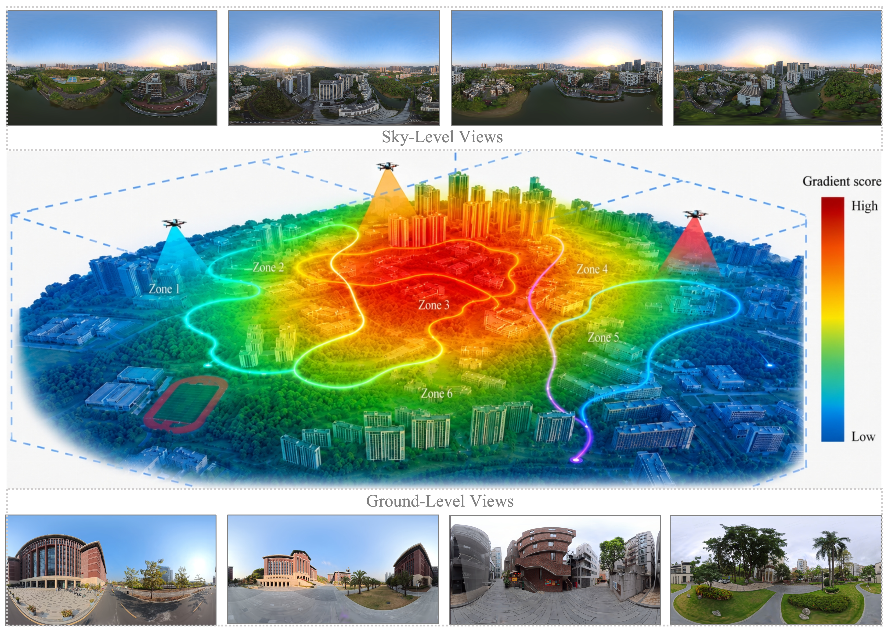
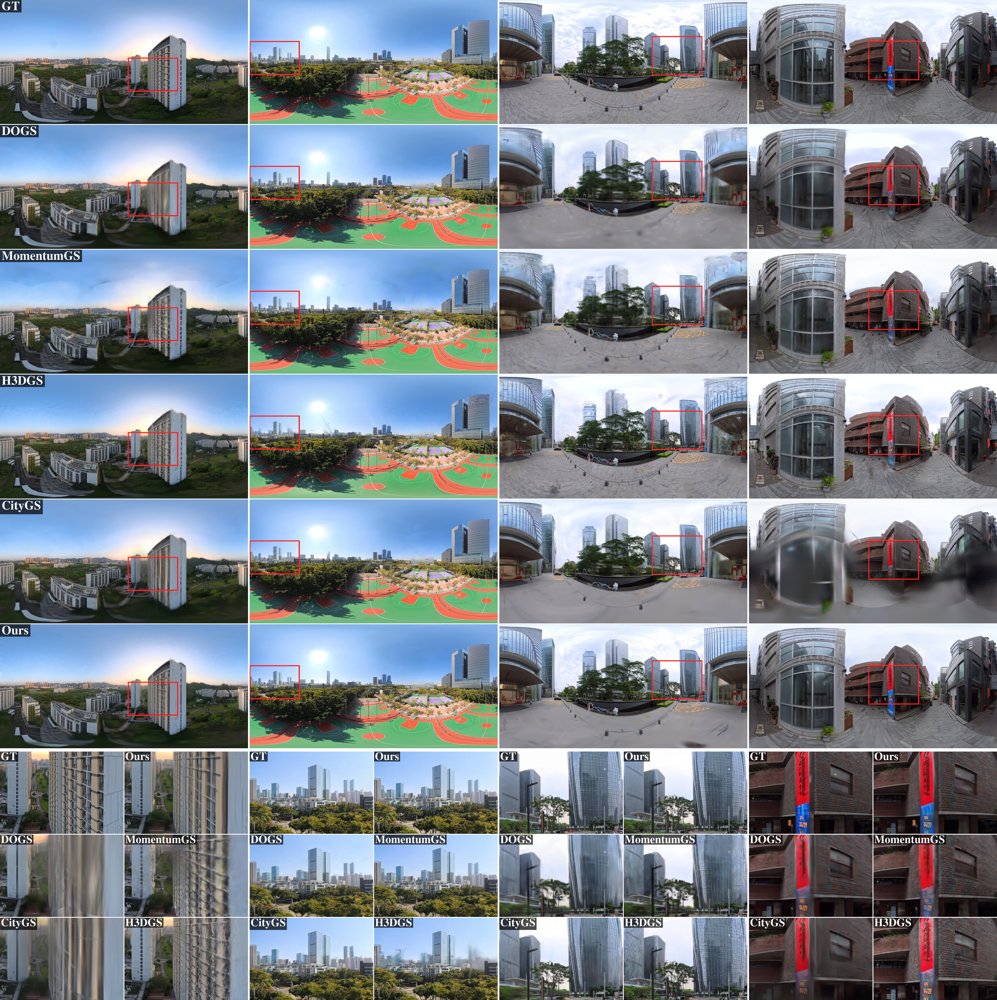
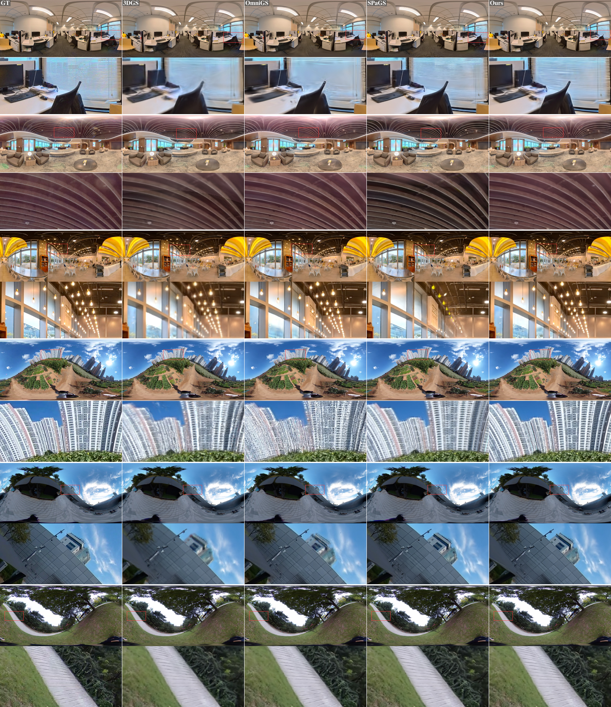
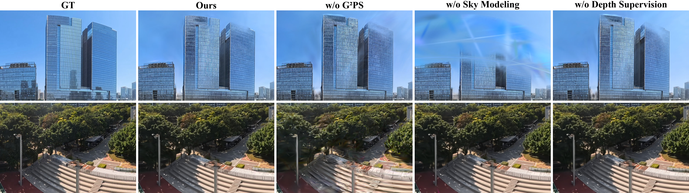

Weijian Chen1,3, Weibo Yao2,3, Yuhang Zhang3, Xiaolin Tang3, Guo Wang3, Weijun Zhang3, Xitong Gao4, Yihao Chen3, Hongde Qin5, Lu Qi3,6
1Sun Yat-sen University 2South China University of Technology 3Insta360 4University of Chinese Academy of Sciences 5Harbin Engineering University 6Wuhan University
Scaling 3D Gaussian Splatting (3DGS) to large outdoor scenes is costly in both data acquisition and computation. Adopting panoramic images with equirectangular projection (ERP) can reduce capture effort via their full 360° field of view, yet the resulting omnipresent visibility invalidates existing partitioning strategies that rely on local camera frustums, causing block-wise optimization to degenerate into global training. We propose PanoLOG, a two-stage coarse-to-fine framework equipped with a Geometry and Gradient-based Partitioning Strategy (G2PS) tailored for large-scale panoramic 3DGS reconstruction. PanoLOG combines panorama-specific geometric priors in a global coarse stage with an adaptive, importance-aware partitioning scheme in the refinement stage, enabling truly block-parallel training under 360° visibility. We further construct Pano360, the first large-scale panoramic outdoor benchmark for 3DGS reconstruction. Extensive experiments demonstrate that PanoLOG achieves state-of-the-art rendering quality while maintaining scalable, block-parallel training.
Patent pending. Full algorithmic details of G2PS will be disclosed in our forthcoming publication.

All videos above are rendered from our trained model.

| Method | NSC | NSK | ||||||
|---|---|---|---|---|---|---|---|---|
| PSNR↑ | SSIM↑ | LPIPS↓ | Model Size↓ (MB) | PSNR↑ | SSIM↑ | LPIPS↓ | Model Size↓ (MB) | |
| H3DGS | 27.7787 | 0.8564 | 0.2457 | 1002.1 | 24.1480 | 0.8154 | 0.1934 | 1843.2 |
| CityGaussian | 27.7340 | 0.8453 | 0.2609 | 523.7 | 24.8270 | 0.8176 | 0.1983 | 1126.4 |
| DOGS | 26.8486 | 0.8186 | 0.2769 | 1024.0 | 24.4606 | 0.7980 | 0.2174 | 1536.3 |
| Momentum-GS | 26.4568 | 0.8311 | 0.2625 | 802.5 | 23.9123 | 0.7979 | 0.1986 | 1024.0 |
| Ours | 28.1838 | 0.8594 | 0.2435 | 463.5 | 24.6387 | 0.8243 | 0.1916 | 544.0 |
| Method | BAX | NSN | ||||||
|---|---|---|---|---|---|---|---|---|
| PSNR↑ | SSIM↑ | LPIPS↓ | Model Size↓ (MB) | PSNR↑ | SSIM↑ | LPIPS↓ | Model Size↓ (MB) | |
| H3DGS | 20.7104 | 0.6626 | 0.3936 | 7577.6 | 23.4464 | 0.7530 | 0.3018 | 5734.4 |
| CityGaussian | 19.8361 | 0.5995 | 0.4902 | 418.5 | 21.9492 | 0.6729 | 0.4221 | 526.6 |
| DOGS | 19.6094 | 0.5745 | 0.5203 | 671.8 | 22.6743 | 0.6587 | 0.4454 | 774.9 |
| Momentum-GS | 20.0993 | 0.5999 | 0.4896 | 1024.0 | 22.9746 | 0.7052 | 0.3703 | 1331.2 |
| Ours | 21.3468 | 0.6656 | 0.4169 | 1331.2 | 24.6095 | 0.7508 | 0.3347 | 766.8 |
| Method | Ricoh360 | 360Roam | ||||
|---|---|---|---|---|---|---|
| PSNR↑ | SSIM↑ | LPIPS↓ | PSNR↑ | SSIM↑ | LPIPS↓ | |
| OmniGS | 26.00 | 0.828 | 0.210 | 24.93 | 0.800 | 0.253 |
| 3DGS | 26.26 | 0.825 | 0.225 | 24.98 | 0.800 | 0.271 |
| ODGS | 22.71 | 0.748 | 0.326 | 19.74 | 0.627 | 0.476 |
| SpaGS | 26.11 | 0.832 | 0.243 | 25.45 | 0.814 | 0.223 |
| Ours | 26.48 | 0.845 | 0.183 | 25.83 | 0.821 | 0.222 |


A formal citation will be available once the paper is released (Late June 2026).
Please check back after publication.